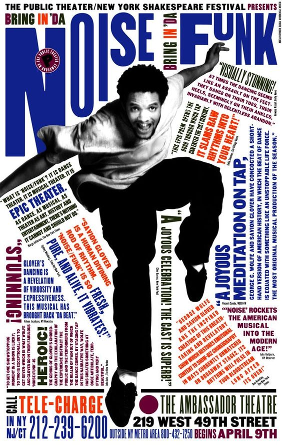
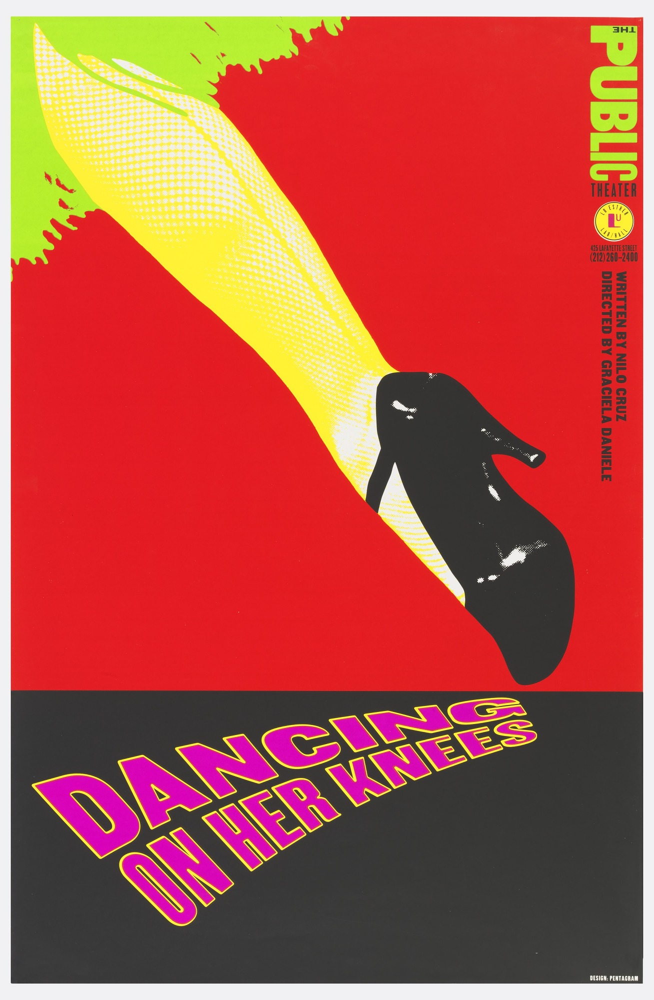
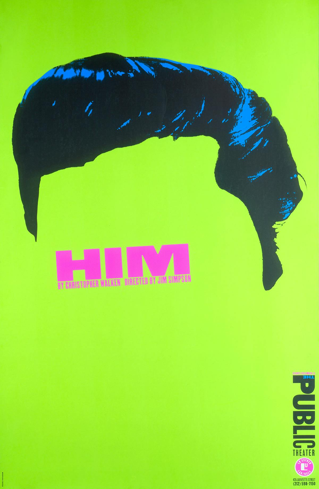
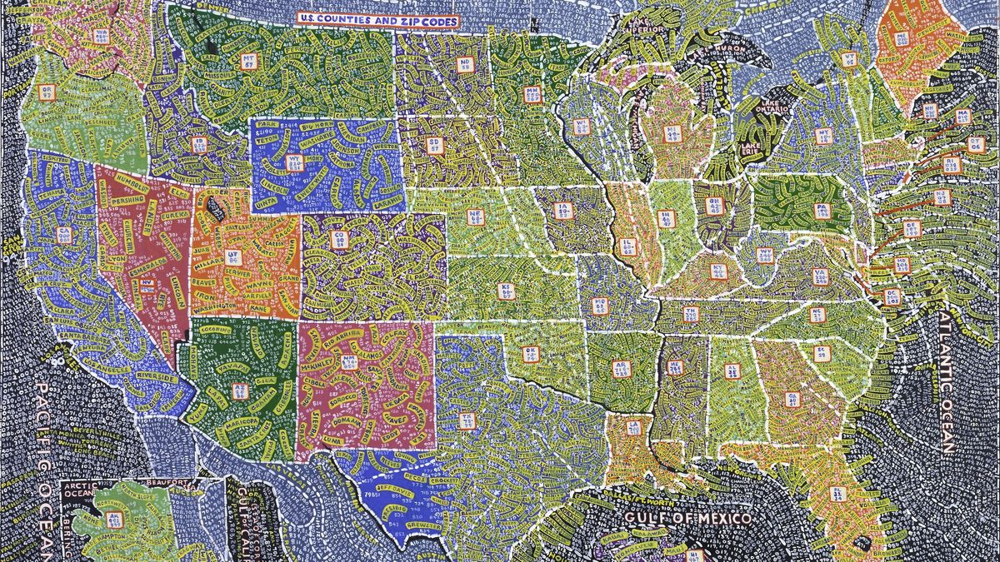
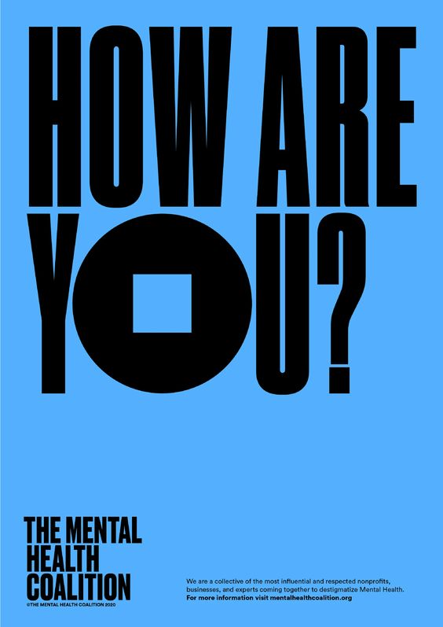
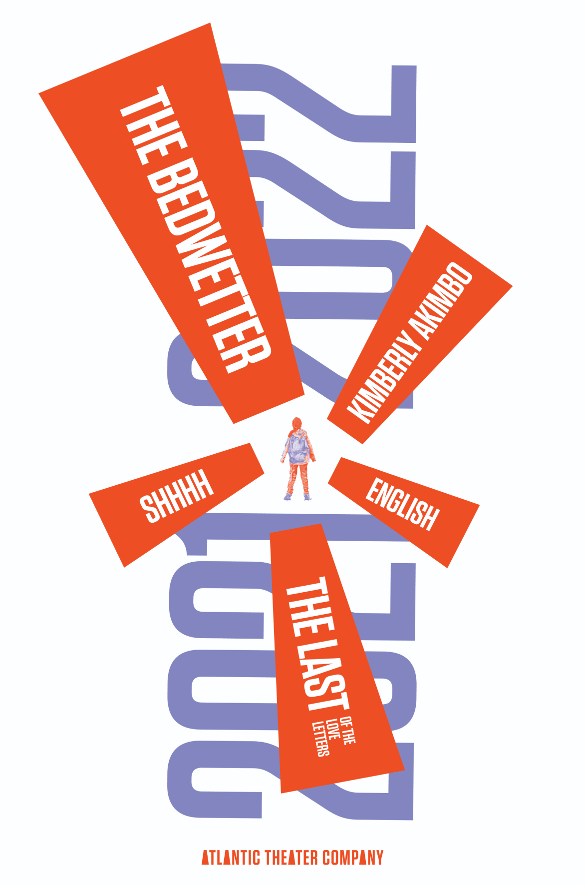
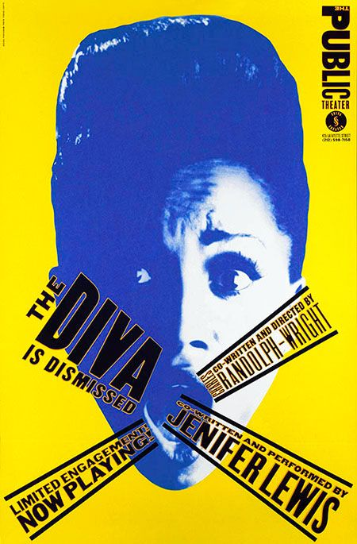

The Public Theater
Paula Scher's groundbreaking identity and graphic campaign for New York's Public Theater set a new bar for typography in the 90s. told Scher described that the identity is based on "being extremely loud and visible and urban".



Besides her passion for graphic design, Paula discovered a love for painting maps.

Portfolio Highlights
Scher has developed identity and branding systems, promotional materials, environmental graphics, packaging and publication designs for a broad range of clients that includes, among others, Bloomberg, Microsoft, Adobe, Bausch + Lomb, Coca-Cola, Shake Shack, Perry Ellis, the Walt Disney Company and the Museum of Modern Art.


